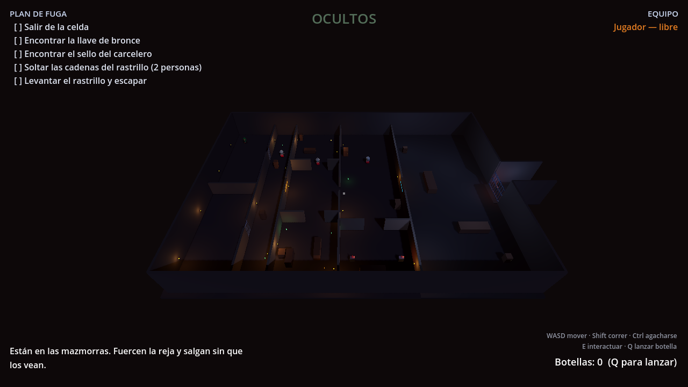
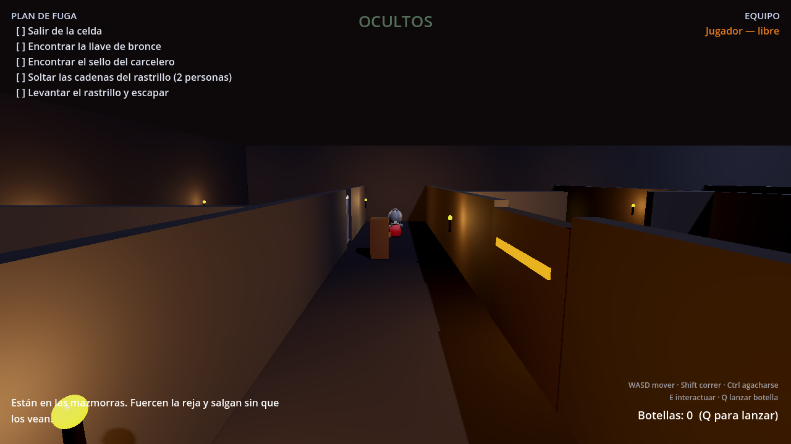
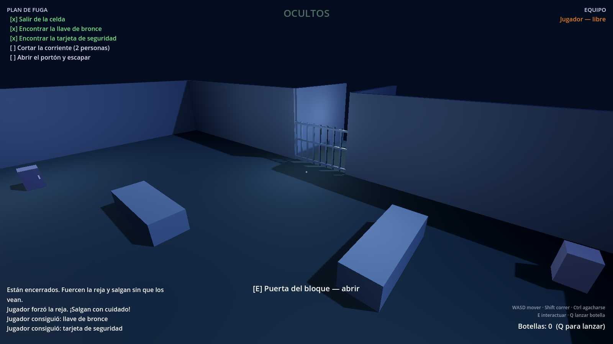

Sois rehenes encerrados en un complejo.
Para salir tendréis que cooperar — y que no os vean.
2 a 8jugadores
Windows y Macsin instalar nada más
Gratissin cuentas ni registros

Descargar, instalar y jugar con tus amigos
Juego cooperativo de sigilo para 2 a 8 jugadores · Windows y Mac
Versión 1.0
FUGAAntes de empezar
Antes de empezar
Esta guía está pensada para que la sigas de principio a fin sin saber nada de
informática. Puedes reenviársela tal cual a tus amigos: sirve para todos.
Qué hace falta
Un ordenador con Windows o un Mac. No funciona en móvil ni en tablet.
Unos 10 minutos la primera vez. Después, entrar a jugar son 10 segundos.
Conexión a internet, y al menos dos personas: hay un paso del juego que es imposible en solitario.
No hay que instalar Steam, ni crear cuentas, ni pagar nada.
Lo más importante de toda la guíaTodos tenéis que descargar la misma versión del juego. Si uno
tiene una versión distinta, no podrá entrar en la partida de los demás. Pasadles
a todos el mismo enlace, el de la página 3.
Windows y Mac os van a mostrar un aviso de seguridad
Es normal y no significa que el juego tenga virus. Aparece con cualquier programa
cuyo autor no haya pagado un certificado de firma digital (unos 100 € al año en
Windows, 99 € al año en Mac). En el paso 2 se explica cómo
continuar en cada sistema.
Qué vas a encontrar
Paso 1 — Descargar el juegopágina 3
Paso 2 — Abrirlo por primera vezpáginas 4 y 5
Paso 3 — Conectaros entre vosotrospáginas 6 y 7
Paso 4 — Cómo se juegapáginas 8 a 10
Paso 5 — Si algo no funcionapágina 11
Anexos — Steam y cómo modificar el juegopágina 12
Fuga — Guía de instalación2
FUGAPaso 1 · Descargar
1Descargar el juego
Entra en esta dirección desde tu navegador. Es la misma para todos.
Verás una página con el título «Fuga — versión jugable». Baja
hasta el apartado Assets y haz clic en el archivo que
corresponda a tu ordenador:
Si tienes…
Descarga este archivo
Windows
Fuga-Windows.zip
Mac
Fuga-Mac.zip
Linux
Fuga-Linux.zip
Aprovecha y descarga también Guia-Fuga.pdf: es este mismo documento.
Windows Descomprimir el archivo
Abre la carpeta Descargas y busca Fuga-Windows.zip.
Haz clic derecho encima y elige «Extraer todo…».
Pulsa Extraer. Se creará una carpeta llamada Fuga-Windows.
No juegues desde dentro del ZIP
Si haces doble clic en el archivo comprimido y abres el juego desde ahí, dará
error o se cerrará solo. Hay que extraerlo antes, sí o sí.
Mac Descomprimir el archivo
Abre la carpeta Descargas y haz doble clic en Fuga-Mac.zip.
Se creará sola una carpeta llamada Fuga-Mac con la aplicación dentro.
Arrastra Fuga a tu carpeta Aplicaciones.
Fuga — Guía de instalación3
FUGAPaso 2 · Abrirlo · Windows
2Abrirlo por primera vez
Windows Pasar el aviso azul
Entra en la carpeta Fuga-Windows y haz doble clic en Fuga
(el archivo con extensión .exe).
Casi seguro que aparecerá una ventana azul que dice
«Windows protegió tu PC» y solo ofrece un botón de
No ejecutar. No te quedes ahí:
Haz clic en el texto pequeño «Más información», debajo del mensaje.
Aparecerá un botón nuevo: «Ejecutar de todas formas». Púlsalo.
El juego se abrirá. Esto solo pasa la primera vez.
¿Por qué sale ese aviso?
Windows enseña esa pantalla a todo programa que no reconoce, y solo reconoce
los que han comprado un certificado de firma digital. Es un trámite de pago,
no una comprobación de seguridad: un virus con certificado no daría aviso, y
este juego sin certificado sí lo da. Puedes revisar el código completo en
GitHub, en la dirección de la página 3.
Si el antivirus borra el archivo
Algunos antivirus (sobre todo Avast y AVG) borran los juegos hechos con este
motor por precaución. Si el archivo desaparece solo:
Abre tu antivirus, busca la lista de cuarentena y restaura el archivo.
Añade la carpeta Fuga-Windows a las exclusiones del antivirus.
Vuelve a descargar el ZIP si ya no está.
Consejo
Crea un acceso directo en el escritorio: clic derecho sobre Fuga
→ Mostrar más opciones → Enviar a → Escritorio (crear acceso directo).
Así lo abres de un clic las próximas veces.
Fuga — Guía de instalación4
FUGAPaso 2 · Abrirlo · Mac
2Abrirlo por primera vez
Mac Dar permiso a la aplicación
Haz doble clic en Fuga. macOS dirá que
«no se puede abrir porque procede de un desarrollador no
identificado» y solo dejará cancelar. Se arregla así:
Cierra ese mensaje.
Abre el menú Apple (arriba a la izquierda) → Ajustes del Sistema.
Entra en Privacidad y seguridad y baja del todo.
Verás una frase sobre Fuga con un botón «Abrir de todos modos». Púlsalo.
Vuelve a hacer doble clic en el juego y confirma con Abrir.
Ya está: solo hay que hacerlo una vez.
Si dice que la aplicación «está dañada»
No lo está: es una etiqueta que macOS pone a todo lo descargado de internet.
Abre la aplicación Terminal (búscala con Cmd + Espacio),
escribe exactamente esto incluido el espacio del final:
xattr -dr com.apple.quarantine
y sin pulsar Enter todavía, arrastra el icono de Fuga hasta la ventana
del Terminal. Se completará solo con la ruta. Ahora sí, pulsa Enter y
vuelve a abrir el juego.
¿Por qué sale ese aviso?
Apple pide una suscripción anual de desarrollador para que las aplicaciones se
abran sin preguntar. Este juego no la tiene, así que macOS avisa aunque el
programa sea inofensivo. El código está publicado y se puede revisar.
Fuga — Guía de instalación5
FUGAPaso 3 · Conectaros
3Conectaros entre vosotros
Uno crea la partida (el anfitrión) y los demás se unen a él.
Cómo hacerlo depende de si estáis juntos o cada uno en su casa.
Estáis en la misma casa
Misma wifi o mismo router. Funciona directamente, sin configurar nada. Sigue esta página.
Cada uno en su casa
Hace falta un paso extra de 5 minutos que se hace una sola vez. Está en la página siguiente.
A · Todos en la misma wifi
El anfitrión averigua su IP.
En Windows: pulsa la tecla Windows, escribe cmd, abre
la ventana negra, escribe ipconfig y pulsa Enter. Busca la línea
Dirección IPv4.
En Mac: Ajustes del Sistema → Red → Wi-Fi → Detalles.
Será un número parecido a 192.168.1.50.
El anfitrión crea la partida. Abre el juego, escribe su nombre
y pulsa «Crear partida (IP directa)». Entrará en la sala de espera.
Los demás se unen. Abren el juego, escriben su nombre, escriben
la IP del anfitrión en la casilla de la derecha y pulsan «Unirse (IP)».
Cuando estéis todos en la lista, el anfitrión pulsa «Iniciar partida».
Para probar tú solo
Puedes abrir el juego dos veces en el mismo ordenador: en una creas la partida y
en la otra te unes escribiendo 127.0.0.1. Va bien para ver el mapa
antes de quedar con los demás.
Si no consigue unirse
Casi siempre es el cortafuegos de Windows del anfitrión. La
primera vez que crea una partida, Windows muestra una ventana pidiendo permiso:
hay que marcar Redes privadas y pulsar Permitir acceso.
Si se cerró sin querer, basta con reiniciar el juego y volver a crear la partida.
Fuga — Guía de instalación6
FUGAPaso 3 · Conectaros por internet
B · Cada uno en su casa
Por internet los routers bloquean las conexiones directas. La solución más fácil
es una red virtual: un programa gratuito que os hace creer a
todos los ordenadores que están en la misma wifi. A partir de ahí, todo funciona
igual que en la página anterior.
Con Radmin VPN (gratis, el más sencillo en Windows)
Todos entráis en radmin-vpn.com y descargáis el programa.
Lo instaláis y lo abrís. No hay que registrarse.
Uno pulsa Red → Crear red, se inventa un nombre y una contraseña, y se los pasa a los demás por WhatsApp.
Los demás pulsan Red → Unirse a una red y escriben ese nombre y esa contraseña.
Ahora todos os veis en la lista de Radmin. La IP que aparece ahí al lado del anfitrión (empieza por 26.) es la que hay que escribir en el juego.
¿Alguien usa Mac?
Radmin VPN solo existe para Windows. Si en el grupo hay Macs, usad
ZeroTier (zerotier.com) o Tailscale
(tailscale.com): son igual de gratuitos y funcionan en los dos sistemas. La idea
es idéntica — uno crea la red, los demás se unen con el código que les pase, y
después usáis la IP que os asigne el programa.
Alternativa avanzada: abrir el puerto
Si preferís no instalar nada, el anfitrión puede abrir en su router el
puerto 7777 (UDP) apuntando a su ordenador, y pasar a los demás
su IP pública (la que sale al buscar «cuál es mi ip» en Google). Es más
engorroso, cambia según la marca del router y algunas operadoras no lo permiten,
por eso recomendamos la red virtual.
Consejo de anfitrión
Que haga de anfitrión quien tenga mejor conexión y, a ser
posible, cable de red en vez de wifi. El anfitrión es quien lleva las cuentas de
la partida, así que su conexión marca la fluidez para todos.
Fuga — Guía de instalación7
FUGAPaso 4 · Cómo se juega
4Cómo se juega
Empezáis todos encerrados en la misma celda. Para salir hay que completar cinco
objetivos en orden. Los veréis siempre arriba a la izquierda de la pantalla.
Forzad la reja de la celda. Hay que mantener pulsada la tecla un rato, así que conviene que alguien vigile.
Encontrad la llave de bronce. Cambia de escondite en cada partida; suele estar en el almacén. Abre la puerta del bloque de celdas.
Encontrad la tarjeta de seguridad. Está en la sala de guardias. Abre la puerta que da al patio.
Cortad la corriente. En la sala del generador hay dos palancas separadas, y las dos deben mantenerse pulsadas a la vez y por dos personas distintas. Este paso es imposible en solitario.
Abrid el portón y salid. Cruzad la salida del fondo del patio.
Si te pillan
Te encierran en la celda del sur, y un compañero tiene que ir hasta allí a
liberarte manteniendo pulsada la tecla E en la reja. Solo perdéis
cuando no queda nadie libre, así que rescatar merece la pena casi siempre.
Hablad entre vosotros
Poneos antes en una llamada de Discord o de WhatsApp. El juego no lleva chat de
voz, y sin hablar el paso del generador es prácticamente imposible de coordinar.
Fuga — Guía de instalación8
FUGAPaso 4 · Controles
Controles
Tecla
Qué hace
W A S D
Moverte
Ratón
Girar la cámara alrededor de tu personaje
Shift
Correr — rápido, pero se te oye desde muy lejos
Ctrl o C
Agacharte — lento, silencioso y mucho más difícil de ver
E
Interactuar. Algunas acciones hay que mantenerlas pulsadas
Q
Lanzar una botella para distraer a los guardias
Esc
Soltar el ratón (para salir de la ventana) o volver a capturarlo

El pasillo de las celdas. A la derecha, la puerta con la franja naranja: esa es
la que abre la llave de bronce. Arriba a la izquierda tenéis siempre la lista de
objetivos; en el centro, el aviso de si os están viendo; abajo, lo que podéis
hacer con la tecla E allí donde estáis.
Lo primero que conviene mirar
El aviso del centro de la pantalla resume vuestra situación de un vistazo:
OCULTOS significa que nadie os ha detectado,
TE ESTÁN VIENDO que un guardia empieza a fijarse en vosotros, y
¡TE PERSIGUEN! que ya vais tarde.
Fuga — Guía de instalación9
FUGAPaso 4 · Pasar desapercibidos
Pasar desapercibidos
Todo el juego se reduce a esto: llegar a los objetivos sin que ningún guardia os
ponga la vista encima.
Las tres reglas del sigilo
Regla
Por qué importa
Mira el cono de luz
Cada guardia proyecta en el suelo el cono de lo que ve. Amarillo: patrullando tranquilo. Naranja: sospecha y va a investigar. Rojo: te ha visto y te persigue. No ven a través de las paredes.
El ruido delata
Correr se oye a 15 metros; caminar, a 6; agachado no haces ningún ruido. Cuando haya un guardia cerca, agachaos aunque tardéis más.
Usad las botellas
Las encontraréis por el mapa. Al lanzarlas con Q hacen un estruendo que se oye a 22 metros y atrae a los guardias a ese punto: es la forma de sacar a uno de su ruta y pasar por detrás.
Escondeos
Armarios, cajas, barriles y los huecos bajo los escritorios sirven de escondite:
acercaos y pulsad E. Dentro no os ven, pero tampoco podéis moveros. Pulsad E otra
vez para salir. Es la mejor jugada cuando ya os están persiguiendo: romped la
línea de visión doblando una esquina y meteos en el primer escondite.
Repartíos el trabajo
Lo que mejor funciona es ir en parejas: uno se asoma y canta dónde está el guardia
mientras el otro fuerza la cerradura o cruza el pasillo. Ir todos en fila por el
mismo pasillo es la forma más rápida de que os pillen a todos a la vez.

El patio, ya al final del recorrido. Al fondo, el portón de salida: mientras siga
electrificado brilla en azul, y en cuanto cortéis la corriente en el generador se
vuelve verde y se puede abrir.
Fuga — Guía de instalación10
FUGAPaso 5 · Si algo falla
5Si algo no funciona
Estos son los tropiezos más habituales y cómo se resuelven.
Lo que pasa
Qué hacer
Mi amigo no consigue unirse a mi partida
Comprobad que ha escrito bien la IP y que los dos tenéis la misma versión del juego. Si estáis en casas distintas, hace falta la red virtual de la página 7. Y revisad el permiso del cortafuegos de Windows en el ordenador del anfitrión.
El juego se cierra nada más abrirlo
Casi seguro que lo estás ejecutando desde dentro del ZIP. Extrae la carpeta primero (página 3) y abre el juego desde ella.
Windows no me deja abrirlo
Más información → Ejecutar de todas formas (página 4).
El Mac dice que está dañado
Usa el comando xattr de la página 5. No está dañado: es la etiqueta de descarga de macOS.
El antivirus me borra el archivo
Restáuralo desde la cuarentena del antivirus y añade la carpeta a las exclusiones (página 4).
Va a tirones o se ve entrecortado
Que haga de anfitrión quien tenga mejor conexión, a ser posible por cable. Cerrad Chrome y las descargas mientras jugáis.
Se me va el ratón fuera de la ventana
Haz clic dentro del juego para volver a capturarlo. Con Esc lo sueltas cuando quieras salir.
Entramos pero no veo a nadie
Todos empezáis en la misma celda; si alguien no aparece, es que su conexión se cayó al empezar. Volved al menú y cread la partida otra vez.
Se cerró el juego del anfitrión
La partida termina para todos: el anfitrión es quien la sostiene. Volved a crearla.
Si nada de esto lo arregla
En la página del proyecto en GitHub (la dirección de la página 3) hay un apartado
Issues donde se puede describir el problema. Cuenta qué sistema
usas, qué hiciste y qué salió en pantalla.
Fuga — Guía de instalación11
FUGAAnexos
Anexo A · Sobre Steam
El juego está preparado para funcionar con Steam, pero conviene saber en qué
punto está exactamente:
La versión que acabas de descargar se conecta por IP, como
explica el paso 3. No necesita Steam para nada y funciona igual de bien.
Invitar desde la lista de amigos de Steam (sin IPs) ya está
programado, pero requiere añadir al proyecto dos complementos gratuitos
—GodotSteam y SteamMultiplayerPeer— y volver a compilarlo. Está explicado en el
archivo README.md del repositorio.
Publicarlo en la tienda de Steam para que se instale como
cualquier otro juego exige registrarse como socio de Valve y pagar
100 dólares por el identificador de la aplicación (se
recuperan si el juego vende). Después hay que rellenar la ficha de tienda y
esperar a que Valve lo revise.
Anexo B · Modificar el juego
Todo el código es libre y está en el repositorio. Si quieres cambiar el mapa, la
dificultad de los guardias o añadir cosas:
Descarga Godot 4.4 (la versión normal, no la de .NET) desde godotengine.org. No hace falta instalarlo: es un único archivo que se ejecuta.
Descarga el proyecto entero desde GitHub con el botón verde Code → Download ZIP y descomprímelo.
Abre Godot, pulsa Importar y elige el archivo project.godot de la carpeta.
Pulsa F5 para jugar y probar los cambios al momento.
Cuando quieras repartir tu versión: Proyecto → Exportar. Ya están preparados los ajustes de Windows, Mac y Linux.
Dónde tocar cada cosa
La velocidad y la vista de los guardias están en
scripts/guard/guard.gd; el mapa, los objetivos y dónde aparecen las
llaves, en scripts/level.gd. Los dos archivos están comentados en
español.
Una idea para más adelante
El juego admitiría un modo en el que uno de vosotros haga de
secuestrador en lugar de dejarlo todo a los guardias automáticos. La
parte de red ya está preparada para ello.